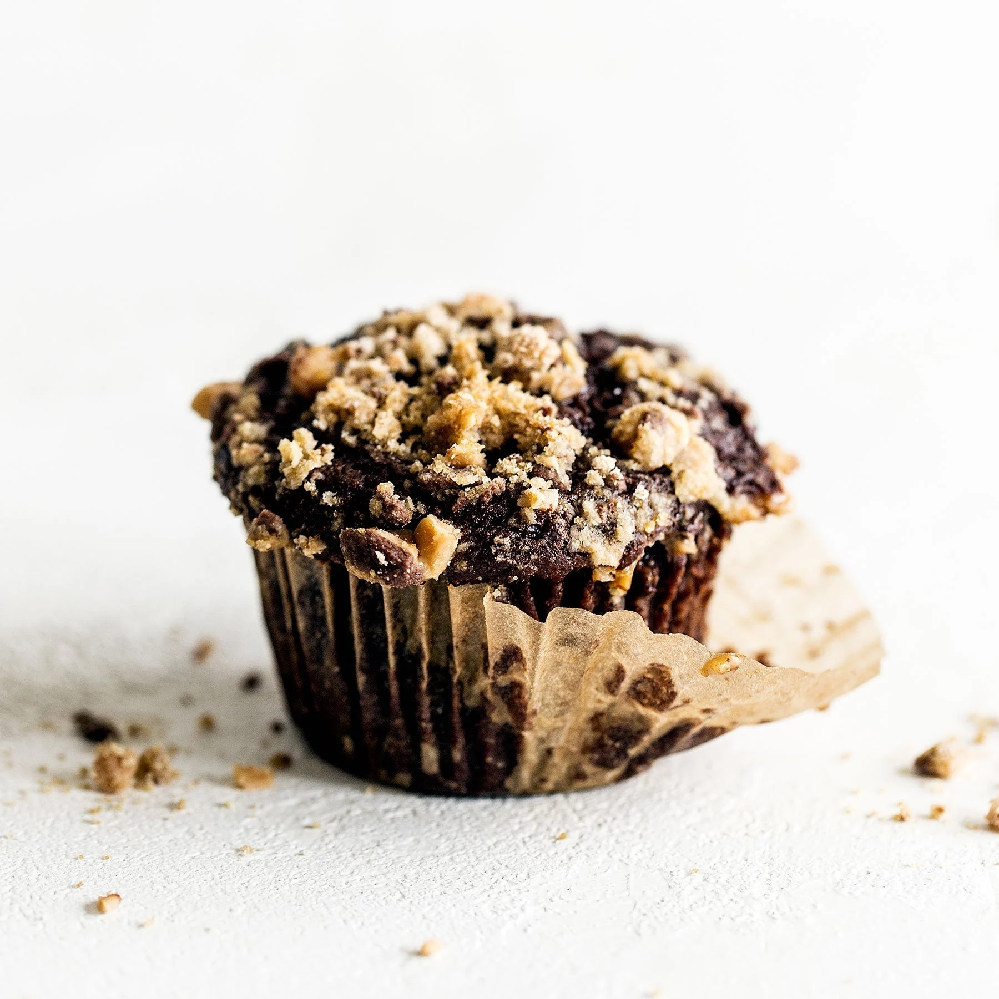

Chocolate Coffee Toffee Crunch Muffins

Description
Chocolate Coffee Toffee Crunch Muffins feature a mocha muffin base that’s
studded with chocolate chips and topped with a crunchy toffee streusel for the
best combination of flavor and texture!
Ingredients
For the muffins:
- 2 cups (254 grams) all-purpose flour
- 2/3 cup (133 grams) packed brown sugar
- 1/2 cup (43 grams) unsweetened cocoa powder, sifted
- 1 tablespoon instant espresso powder
- 2 teaspoons baking powder
- 1/2 teaspoon baking soda
- 1/2 teaspoon fine sea salt
- 6 tablespoons (85 grams) unsalted butter, melted
- 1 1/2 cups buttermilk
- 2 large eggs
- 1 teaspoon vanilla extract
- 1 cup (170 grams) semisweet chocolate chips
For the toffee crunch topping:
- 1/4 cup (32 grams) all-purpose flour
- 2 tablespoons brown sugar
-
1/2 cup toffee bits (such as Heath brand or homemade, recipe linked in
directions)
- 1 tablespoon butter, at room temperature
Steps
- Preheat the oven to 375°F. Line a muffin tin with paper muffin cups.
For the muffins:
-
In a large bowl combine the flour, brown sugar, sifted cocoa powder,
espresso powder, baking powder, baking soda, and salt.
-
In a small bowl combine the melted butter, buttermilk, eggs, and vanilla.
Pour the butter mixture into the flour mixture and stir until combined. Stir
in the chocolate chips. Do not overmix.
- Divide the batter evenly among the muffin cups.
For the toffee crunch topping:
-
In a small bowl combine the flour, sugar, and toffee bits. Cut the butter
into the mixture using the back of a fork until it is coarse and crumbly.
Sprinkle about a tablespoon of the mixture over each unbaked muffin.
-
Bake for 20 minutes, or until a cake tester inserted into the center comes
out clean. Transfer the pan to a wire rack to cool for 5 minutes before
removing the muffins to the rack to cool completely.